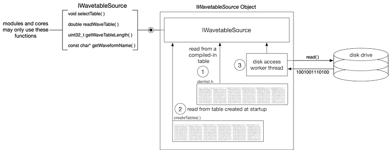

The wavetables folder includes example wavetable subfolders that store .h files using the SynthLabTableSet data structure for organizing the tables, table names, and lengths. Most of these tables depend on a single .h file that exposes the SynthLabTableSet structure. However, the actual encoding of the wavetables is irrelevant to the synth engine or the database! The example files are just that - examples for you to use. Once you have the wavetable synth running, you will want to replace the tables with your own, and that is very easy to do if you understand how abstract C++ interfaces isolate and hide impelmentation details.
Folders
The wavetable folders consist of files for both single and morphing wavetables. The morphing tables were concocted using WaveEdit and seed waveforms from a variety of sources including found-sounds. WaveEdit provided the cross-table effect modulation. The resulting folders of wave files were processed with RackAFX's TableMaker utility for conversion to static tables packaged in .h files, and encoded as 64-bit hex values. TackAFX TableMaker does provide encryption capability but that was not used in SynthLab. The tables include:
- static_tables: tables for traditional wavetable synthesis organized in high-resolution sets where an array of pointers stores individual tables for every MIDI note in order to provide the maximum number of harmonics before aliaising, as well as butter-smooth transitions from one table to the next as the pitch modulation is applied.
- drumtables, sfxtables: these do not use the SynthLabTableSet and are examples of raw-form tables; they were created using WAV files of individual drum hits and sound effect along and converted to .h file tables using RackAFX TableMaker
- fm_wt: a varitey of FM waveforms created with WaveEdit
- vs_wt: a variety of tables created with Prophet-VS patches
- anasaw: analog sawtooth waveform using analog saw seed in WaveEdit
- anasquare: analog square waveform using analog square seed in WaveEdit
- akwf_8: a set of wavetables converted from the AKWF wave file set and table-ized with RackAFX TableMaker
- dentist: morphing wavetable set from an aribtrary seed in WaveEdit
- digDoo1: morphing wavetable set from didgeridoo slices in the AKWF set
- digDoo2: morphing wavetable set from didgeridoo slices in the AKWF set
- digDoo3: morphing wavetable set from didgeridoo slices in the AKWF set
- primalwaves: morphing wavetable set of four primitive waveforms: sine, square, saw, triangle
- sawdemon: morphing wavetable set using a square wave mangled in WaveEdit
- sinemorph: morphing wavetable set using a sine wave mangled in WaveEdit
- squareduty: morphing wavetable set using a squarewave whose duty cycle is modulated across the table set
- squarecomb: morphing wavetable set using a squarewave with a comb filter that is modulated across the table set
- squarering: morphing wavetable set using a squarewave with a ring modulator that is modulated across the table set
HEX Encoded Tables
If you examine the wavetable .h files, you will see that the tables are encoded in 64-bit unsigned integer format, which is the output of the RackAFX-TableMaker utility. Storing the data this way allows maximum precision without writing out scores of digits afer the decimal place. The data is converted into double format using the reinterpret_cast operator; reinterpret_cast evaporates during the complile process, and adds zero machine code to the plugin binary. Table reads and interpolation in the example wavetable source objects generally follow this pattern:
Generic Interface Classes
A key design feature in SynthLab is the use of generic interface classes that allow you to customize things that are programmer-centric (or perhaps company-centric) such as storing wavetables and PCM samples. The IWavetableSource and IWavetableDatabase interfaces are written so that the modules and cores have no information about how the data is stored.
This allows you to write two C++ objects (one for the database and one for the wavetable source) that expose the two interfaces above and then you can connect them directly with the synth engine, which shares the IWavetableDatabase with its voice objects, who share them with their oscillators.
IWavetableDatabase
The wavetable oscillator and its cores access the wavetable information from a shared object that implements the IWavetableDatabase interface. This interface is platform independent and framework/API agnostic. The database object provides a simple set of functions for querying, adding and removing wavetables or sets of wavetables. The objects that use the database do not know any details of how the database stores its information.
Database Queries
When each wavetable core is reset, it queries the database to see if its tables exist or not. If a table does not exist, the core provides the IWavetableSource pointer for the database to store. The upshot of this is that the very first core of a given kind will register fresh tables with the database. After that, the other cores will find them, and not attempt to register them.
During initialization, the wavetable oscillator cores will perform the following steps on the database at initialization time:
- checking the database to see if a wavetable exists; the wavetables are identified with unique waveform strings that will be connected to a GUI control that likewise will need to expose unique strings to the user
- adding wavetables to the database if they don't exist; wavetable objects implement the IWavetableSource interface, which is used for storing and reading the tables
- wavetables may be parsed using either the unique name string (that is on the GUI) or a unique index value; using the index value is much more efficient and when you query or register the wavetable, you may obtain the unique index for each table and store that for parsing
- the IWavetableDatabase definition below contains the two different getTableSource parsing functions, one that accepts the unique name string, and the other that uses the index
- the index is obtained with the getWaveformIndex if the table has already been registered with the database
- if the table has not been added yet, you may retrieve the unique index as a return-by-reference argument of the addTableSource function
IWavetableSource
A wavetable or bank of wavetables is contained within a single object that implements the IWavetableSource interface. Note that this applies to single wavetable sets for rendering a static wavetable, as well as for banks (sets of the sets of tables) used in a morphing oscillator. You can think of the IWavetableSource object as rendering one waveatable patch. The IWavetableSource interface is below. You can see that its functions do not allow any kind of access to the underlying table itself – at no time do the oscillators acually hold a pointer to any table. In fact, the oscillator cores do not know or need to know any details about how the tables are orgainized and stored in the database, nor do they know anything about the actual table encoding, storage, read-back method or interpolation. Likewise, the cores do not control the lifecycles of the wavetable sources as they cannot create or destroy the tables. Think about how you will want to assembly your wavetable source object so that it conforms not only to this interface but also your own method for storing or creating the tables themselves. This interface is used during the oscillator updating and rendering phases. During note event rendering, these oscillator cores will then use the database and:
- select a wavetable or morphing bank of tables based on the user's choice (if it has changed while the note is held, or if this is a new note event); the database returns an IWavetableSource pointer
- select a particular table from the set based on the oscillator's current pitch, including modulation sources and GUI manipulation; the IWavetableSource::selectTable( ) method is used
- asks the IWavetableSource for a wavetable sample at a particular location within the table (including interpolation if used) to fill its output buffer with data
The figure here shows how the interface isolates the implementation details and hides them from the SynthModule or ModuleCore object that accesses them via the IWavetableSource interface functions. Three possible internals are shown and include:
- accessing a compiled-in table (this is how most of the wavetable cores are designed as it is the most simple and fool-proof)
- accessing a table that was calculated at startup time; the FourierWTCore demonstrates this kind of source
setting up a worker thread and accessing tables from disk at run-time as notes are triggered; this is quite complex and will certianly be programmer or company-centric in nature

IWavetableSource Examples
SynthLab includes multiple example IWavetableSource objects that demonstrate different mechanisms for storing the tables. Morphing wavetables are considered to be a "bank" of tables and are organized under a single bank name string, but ultimately, the wavetables are stored exactly as the others in the wavetable datbase, which only knows about its set of tables, and does not know or need to know whether these tables are for morphing or static use. The example IWavetableSource objects include:
| IWavetableSource | Object Description |
|---|---|
| DynamicTableSource | stores dynamically created tables and used in the example module core that synthesizes parabola and triangle waveforms at startup; there is one table per octave of MIDI notes |
| StaticTableSource | stores static hex encoded wavetables that TableMaker produces with each MIDI note table getting its own table that will not alias |
| DrumWTSource | a special static avetable source for pitch-less tables such as drums or sound effects |
| SineTableSource | stores a single static sinusoidal table of double values that is used for all MIDI notes |
Figure 9.6 (from my synth book) shows how these are organized.
Figure 9.6: (a) the sine and drum sources only store and read a single wavetable while (b) the static and dynamic sources each store an array of wavetables, one per MIDI note while (c) the WavetableDatabase contains a dictionary of IWavetableSource pointers whose keys are unique strings that name the waveforms (d) a wavetable bank is a name given to a set of wavetables used for wavetable morphing
Static Table Sources
There are several static wavetable cores provided as examples:
- ClassicWTCore: uses a StaticTableSource for each waveform
- MorphWTCore: uses a set of StaticTableSources, organized as a bank, up to 16 waveforms in size
- DrumWTCore: uses a DrumWTSource for each one-shot drum table
When examining the sample projects, notice where the statically declared wavetable sources are located for each oscillator core:
- ClassicWTCore: declares the array of sources as a member
- MorphWTCore: uses a set of StaticTableSources, declared as an array of sources for each wavetable bank structure (see MorphBankData) - the MorphWTCore owns a set of 16 MorphBankData structures, one for each of its 16 bank names
- rumWTCore: declares the array of sources as a member
Static Wavetables in Data Files
If you plan on storing tables in a datafile (brick) on the drive somewhere, you will have a few decisions to make about how and when you access them and how you plan on creating the IWavetableSource object that will register with the database. These are going to also be very programmer-centric (or company-centric) chores. If you know before-hand (at compile time) how the file is arranged along with the number and sizes of the tables, then you can consider this to be a static wavetable implementation as you can pre-allocate the IWavetableSource objects statically. How you setup the datafile accesses and read operations will be up to you, but the underlying module cores will only be able to call the IWavetableSource functions and the data will need to be available for them.
If you do not know the contents or other "maximum" information about the data file at compile time, then you will need to use a dynamic wavetable system.
Dynamic Wavetables
Dynamic wavetables are data arrays that are created dynamically at or after instantiation time for the plugin. SynthLab includes a dynamic wavetable core named FourierWTCore that synthesizes a parabola waveform during the reset operation and whose harmonic content is related to the sample rate. This core uses the DynamicTableSource object that is designed for holding a std::shared_ptr<double> that is created during the reset operation. I am using a smart pointer here so I don't need to worry with dynamic allocation lifecycles, but you may certainly use new/delete. It is likely that your chosen method of creating and destroying the dynamic tables, and/or setting up disk accesses for a brick file will be very personalized.